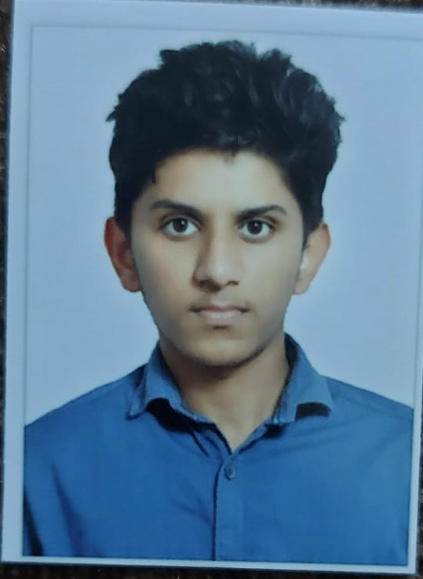

MY RESUME

CHINMAYA BHARADWAJ H S
Summary:
This is me a enthuiast who is intrested in coding and has a lot of confidence to make a load amount of money
Education:
1st grade to 7th grade in Tapovan School(State and ICSE)
8 th to 10 th in Narayana Techno School(CBSE)
1 st PUC and 2nd PUC in Narayana PU College (State)
Skills:
- Have good amount of knowledge in C Programming
- Currently completing Webdev
- Have basic knowledge in JAVA
Work Experience:
As of the current situation have no great Experience but keen in learning.